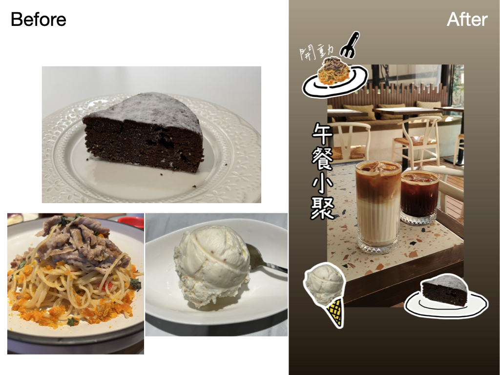
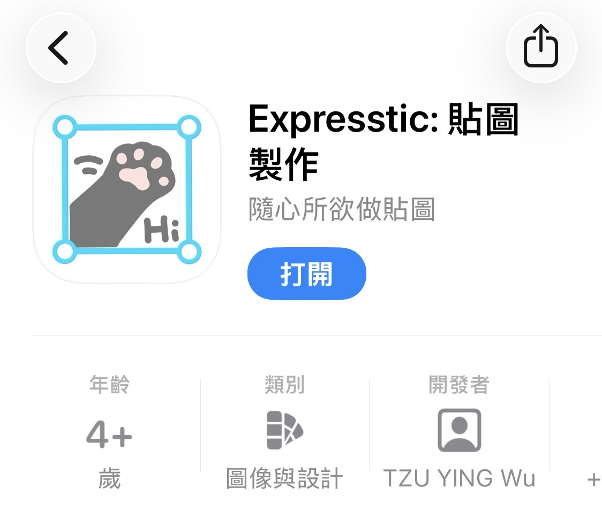
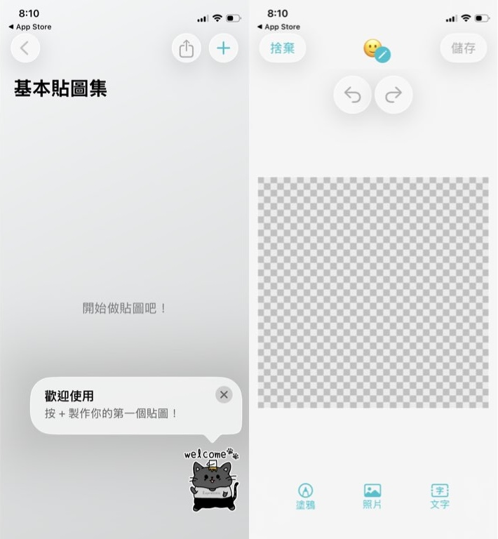
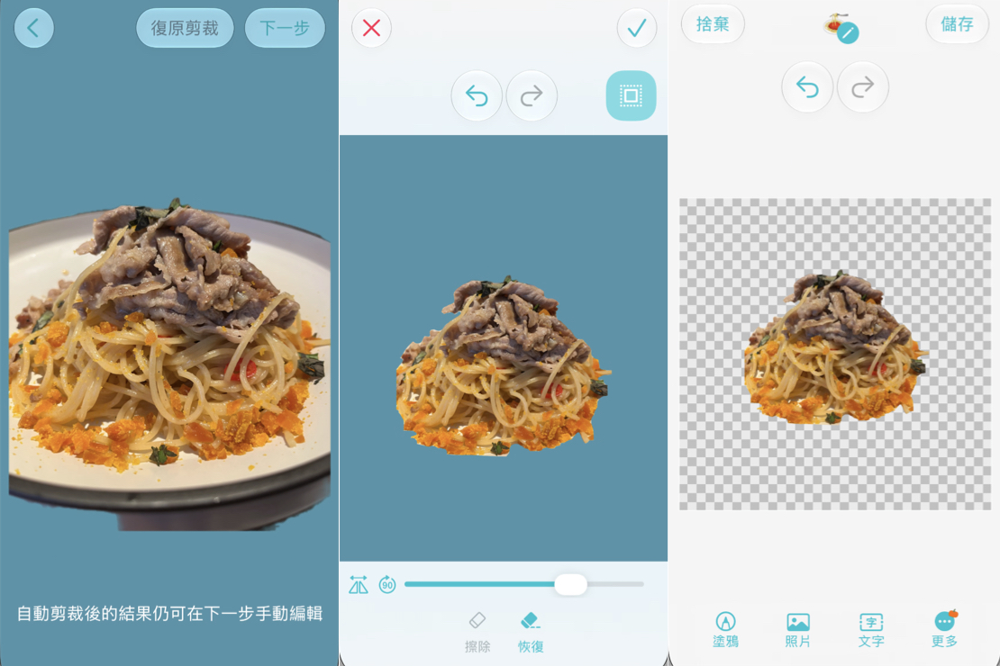
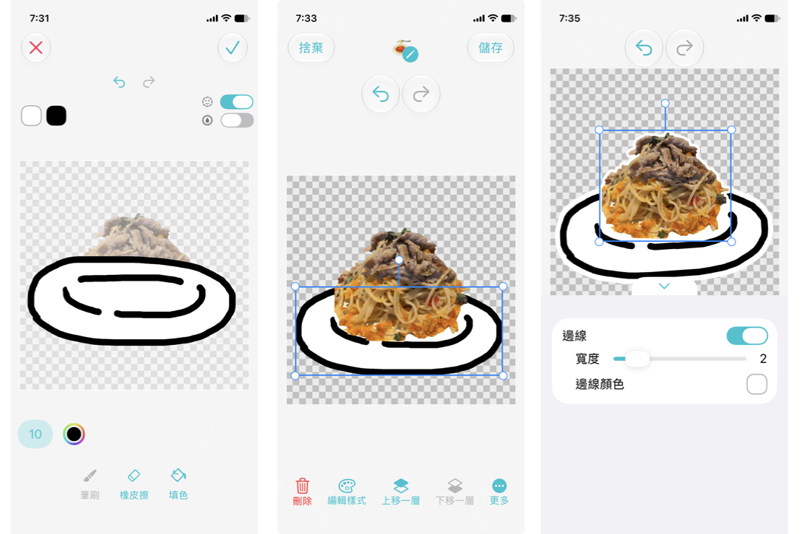
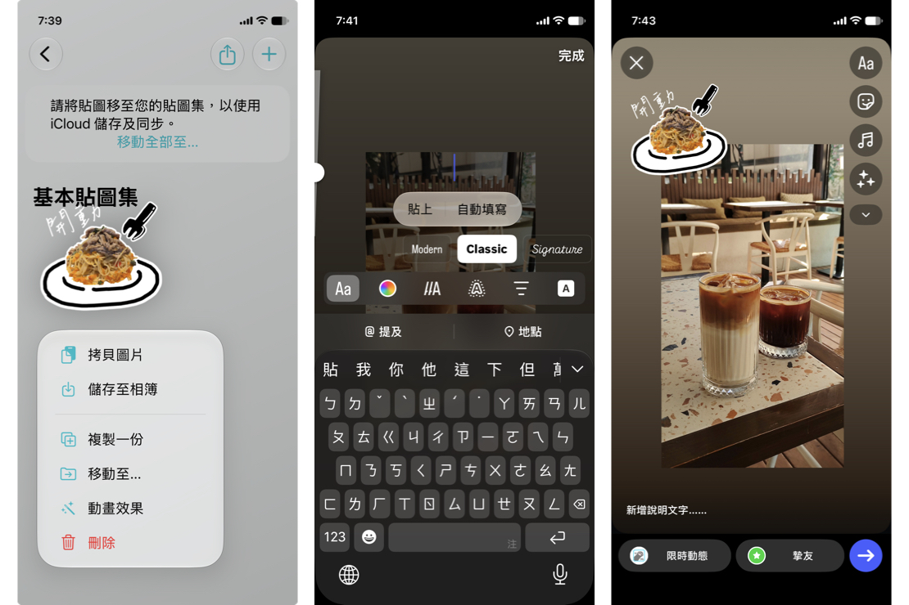
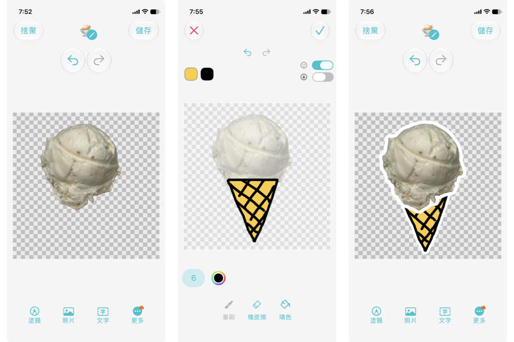
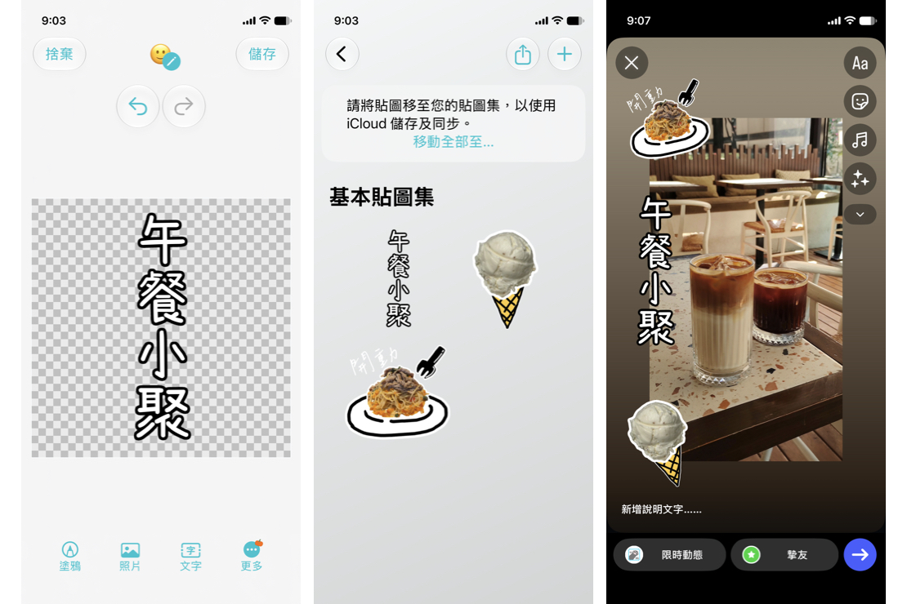
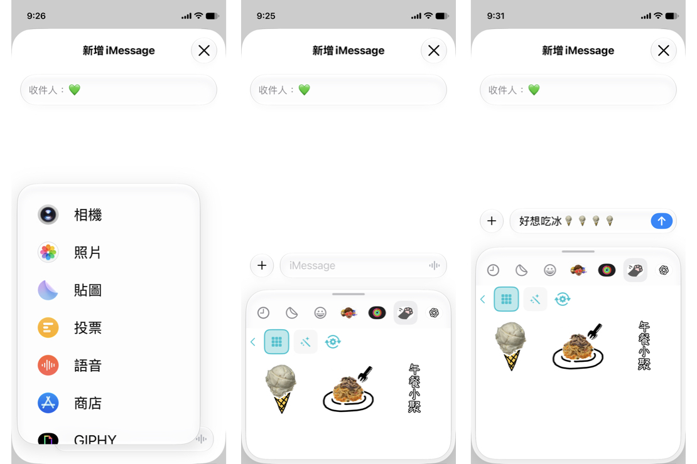

相信大家發的 ig 限動裡面，絕對是以食物佔最大宗吧！不管是踩點、跑咖、自煮，還是食記，一日三餐只是基本，點心、手搖當然也不能少。 許多人都會利用拼貼 App 聰明的將照片拼貼成一張，例如聚餐時同伴點的餐點、主餐、飲料、甜點全部拼貼成一張，不但可以省照片空間，未來回來看也一眼就知道這是哪一餐、在哪間餐廳拍的。
不過對於拍照苦手來說，還有另一個大問題：往往不是照到旁邊的雜物、人物，就是餐盤截一半、取景歪一邊。本篇就要介紹用 Expresstic: 貼圖製作 App 輕鬆補救，讓餐點搖身變成手帳風格，還可以搭配文字和邊線，讓成果更驚艷！

首先，用 iPhone 或 iPad 下載 Expresstic (App Store 連結)，如果追求繪圖精細度的話，用 iPad 會更適合。今天介紹的玩法，免費版本就夠用了喔！

打開 App 之後，會發現已經在基本貼圖集裡面了，按 + 號，我們來製作第一張食物貼圖。

點選「照片」來加入要去背的食物照，例如這張義大利麵，餐盤被截掉了，但我們可以先用自動去背功能，輔以手動精修的方式，得到義大利麵本人～
（善用左下角的水平翻轉、90度旋轉功能，可方便手指塗抹）

這樣子我們就不用受限於被截掉的餐盤，可以自己畫一個喜歡的啦！選擇「塗鴉」進入塗鴉編輯器，可以看到剛剛的義大利麵透寫在底部，我們可以參考他的位置和角度，畫一個餐盤。完成後把它移到最下層，再分別為餐盤、義大利麵都描上白邊。

想要讓畫面更有互動性，所以我又畫了叉子、加入「開動」兩個字。儲存後，馬上就可以長按貼圖，選「拷貝圖片」，到 Instagram 限時動態編輯器，選文字或點選空白處，進入文字輸入欄位，在輸入框中長按一下，即可選擇貼上我們剛做好的貼圖。

冰淇淋的部分，原圖是裝在碗裡，我們可以把它變成甜筒，和義大利麵一樣將本體分離出來，塗鴉一個甜筒，再排版、描邊，就變成很可愛的冰淇淋甜筒了！

想要做單純文字也 OK，完成後我們把三張貼圖都用拷貝貼上的方式加到 ig 限動，就可以自由排版了 — 是不是可愛又簡單呢？

最後，其實我們剛剛做好的貼圖，已經自動被加入貼圖鍵盤囉！你可以在 iMessage 裡面的貼圖找到他們，直接拿來跟朋友聊天。

Expresstic 是可存檔的貼圖編輯器，因此這些貼圖都可以回來調整、拆分，將我們畫好的小零件重複利用在其他地方。下次發限動就試試看吧 :)